Web Design Inspiration Report: 20 Exceptional Websites
Research date: 15 October 2026 (UTC)
Scope: 20 live websites across 11+ countries of origin, 15+ industries, and a deliberate spread of styles, from immersive WebGL to plain, fast HTML.
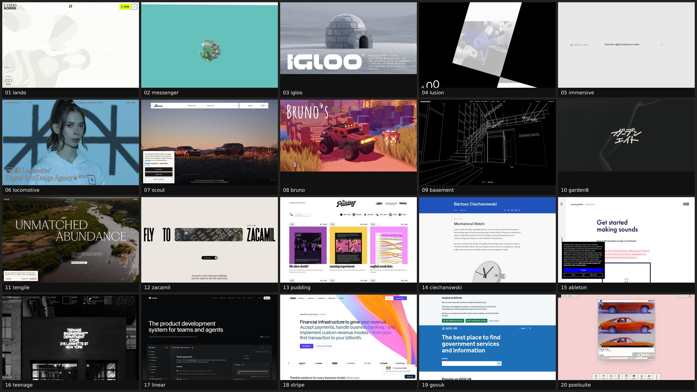
How to read this report
Every claim carries one of three labels:
| Label | Meaning |
|---|---|
| Observed | I saw it directly in a headless Chrome session on the research date, or in the page's HTML/DOM. |
| Source | Taken from an award platform's page (mostly Awwwards), the creator's own site, or an official announcement. Linked in Sources. |
| Unverified | Reported somewhere (LinkedIn posts, press, a research summary) but not confirmed against a primary source. Treat with caution. |
Method and limits
- Captures. Chrome 1440×900 (desktop) and 390×844 at 2× with an iPhone user-agent (mobile emulation, not a real device). Each page was given 8–40 seconds to settle.
- WebGL caveat (important). The sandbox had no GPU, so WebGL ran on a software renderer (SwiftShader). Heavy 3D sites (Igloo, Bruno Simon, Garden Eight, Lando Norris's 3D helmet) didn't finish rendering. This tells you nothing about their speed on a real phone or laptop. Where a capture failed, I used the site's own social-sharing (Open Graph) image and labelled it "site-provided image".
- DOM checks (automated, per page):
<h1>count, images missingalt,<nav>/<main>landmarks, skip link, unnamed buttons/links, whether zoom is disabled in the viewport tag, whether any CSS responds toprefers-reduced-motion, horizontal overflow on mobile, and resource transfer size.- Transfer sizes are lower bounds. Cross-origin assets often report 0 bytes, and measurement stopped at the capture time. I quote them only where they're clearly large.
- Not done: no Lighthouse or Core Web Vitals on real hardware, no screen-reader walkthrough, no colour-contrast measurement. Accessibility notes are signals to investigate, not audit verdicts.
- Award scores. Awwwards publishes jury sub-scores (Design 40%, Usability 30%, Creativity 20%, Content 10%). I quote the Usability sub-score because it's the most useful counterweight to visual spectacle.
1. Comparison table
Key: 3D = WebGL-led experience. Zoom off = the viewport tag blocks pinch-zoom (an accessibility problem; WCAG 1.4.4). RM = CSS that responds to prefers-reduced-motion was detected.
| # | Site | Origin (studio) | Industry | Style | Signature idea | Weight | Mobile (observed) | Accessibility flags (observed) | Headline award (source) |
|---|---|---|---|---|---|---|---|---|---|
| 1 | Lando Norris | UK (OFF+BRAND) | Sport / athlete | Editorial + 3D | Serif/grotesk wordmark, topographic lines, "next race" card | Medium | Re-stacks cleanly | Images have alt; no skip link; no RM | Awwwards SOTY 2025 |
| 2 | Messenger | US (abeto) | Experimental / game | Toon-shaded 3D | A tiny multiplayer planet you deliver mail on | Heavy (≥5.7 MB) | Planet renders | No DOM text at all | Awwwards Dev SOTY 2025 |
| 3 | Igloo Inc | US (abeto + Bureaux) | Web3 / venture | Icy 3D + mono type | Ice-and-snow world as company metaphor | Very heavy (≥15 MB) | Didn't render here | Empty <body>; no headings or text |
Awwwards SOTY 2024 |
| 4 | Lusion | UK | Creative studio | 3D + Swiss | Physics "toy box" hero, numeric loader | Medium–heavy | Loader only here | Zoom off; no nav/main landmarks | Awwwards SOTY 2023 |
| 5 | Immersive Garden | France | Creative studio (luxury) | Luxury minimal | Serif restraint around heavy WebGL case studies | Very heavy (≥21 MB) | Loader | Zoom off; 39/39 images lack alt | Awwwards Agency of the Year 2025 |
| 6 | Locomotive | Canada | Creative agency | Editorial / video | Serif + mono over full-bleed video | Medium | Headline over busy video | RM present; landmarks present | Awwwards Agency of the Year 2024 |
| 7 | Scout Motors | US (Locomotive) | Automotive | Cinematic heritage | Dusk landscape video, floating segmented nav | Medium | Cookie modal covers hero | 17 unnamed controls; RM present | Awwwards E-commerce of the Year 2025 |
| 8 | Bruno Simon | France | Developer portfolio | Game world | Drive a toy truck through the portfolio | Heavy (≥7 MB) | Touch controls documented | No h1; 41/44 images lack alt | Awwwards SOTM Jan 2026 (+2019 SOTM) |
| 9 | basement.studio | Argentina | Creative studio | Wireframe 3D + brutal type | HUMAN / MACHINE toggle → plain-HTML twin | Heavy (≥16 MB) | Toggle overlaps headline | RM present; landmarks present | Awwwards SOTD Apr 2025 |
| 10 | Garden Eight | Japan | Creative studio | Quiet 3D, katakana mark | Bilingual (EN/JA) minimalist studio site | Medium | Didn't render here | Zoom off | Awwwards SOTD 2022 & 2017 |
| 11 | Tengile MalaMala | South Africa (DashDigital) | Hospitality / conservation | Warm luxury editorial | Aerial river film + thin serif "UNMATCHED ABUNDANCE" | Light–medium | Excellent | Skip link; full landmarks; images have alt | Awwwards SOTD 3 Oct 2026 |
| 12 | Colonia Zacamil | El Salvador project (Adoratorio) | Civic / public art | Condensed type + 3D map | "FLY TO ZACAMIL" — map of murals with past/present switch | Heavy (≥5.7 MB) | Type re-stacks well | Zoom off; no headings | Awwwards SOTD 1 Oct 2026 |
| 13 | The Pudding | US | Data journalism | Playful editorial | Numbered "issues," sticker-like nav icons | Medium | Very good | No h1 on index; RM present; skip link | Webby Honoree 2019 |
| 14 | Bartosz Ciechanowski | Poland (solo) | Education / explainers | Plain reading layout + 3D figures | Dozens of draggable, inline interactive diagrams | Medium (~2 MB) | Excellent reading | 13/13 images without alt; no landmarks | None verified |
| 15 | Ableton Learning Synths | Germany | Music education | Flat, colourful, didactic | Playable synth in the first viewport | Light (~1 MB) | "Unmute your device" prompt | Zoom off | Learning Music: Awwwards HM 2017 |
| 16 | Teenage Engineering | Sweden | Consumer electronics | Monochrome industrial | Lowercase nav with pictograms + Japanese micro-copy | Light | Minimal, clean | Zoom off; RM present | None verified |
| 17 | Linear | US | B2B SaaS | Dark, precise | The real product UI is the hero | Light | Excellent | Skip link; landmarks; RM present | None verified |
| 18 | Stripe | US | Fintech | Gradient + clarity | Animated colour ribbon + live "GDP on Stripe" counter | Medium | Excellent | Two h1s; no RM detected | (Stripe.com: Awwwards nominee) |
| 19 | GOV.UK | UK (GDS) | Government | Utilitarian | Search-first, one typeface, one blue | Lightest measured (≥0.2 MB) | Excellent | Skip link; landmarks; RM; balanced cookie choice | Design of the Year 2013 (Design Museum) |
| 20 | Poolsuite | Unverified (Marty Bell) | Music / lifestyle | Retro OS / nostalgia | 1990s desktop as a music app | Medium (~4 MB) | Player window clipped | 73/133 images lack alt; no h1 | Product Hunt Golden Kitty 2020 (app) |
Excluded: Opal Tadpole (Awwwards E-commerce of the Year 2024).
opalcamera.com/tadpolenow redirects toop.al, which shows a company story page ("the table"). Every Tadpole path I tried returned 404. It's no longer accessible, so it isn't reviewed.
2. Individual reviews
Immersive & 3D-led
1. Lando Norris — landonorris.com
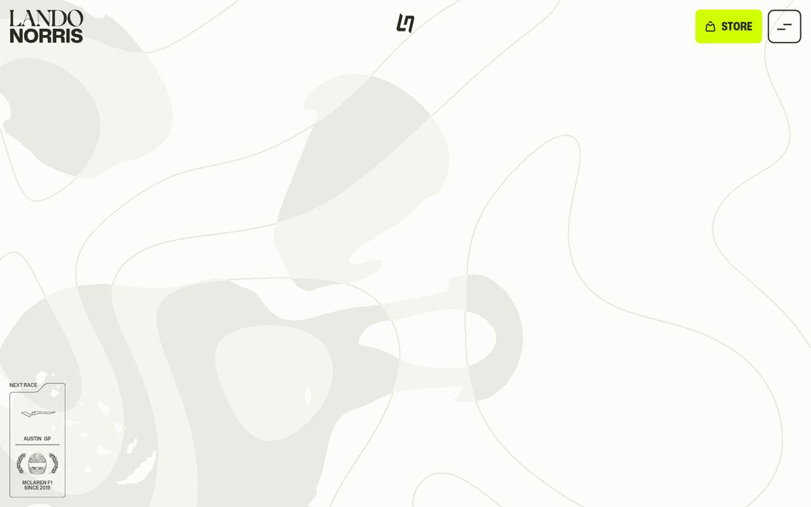
Observed capture, desktop. The 3D helmet layer didn't render under software WebGL; only the topographic layer is shown.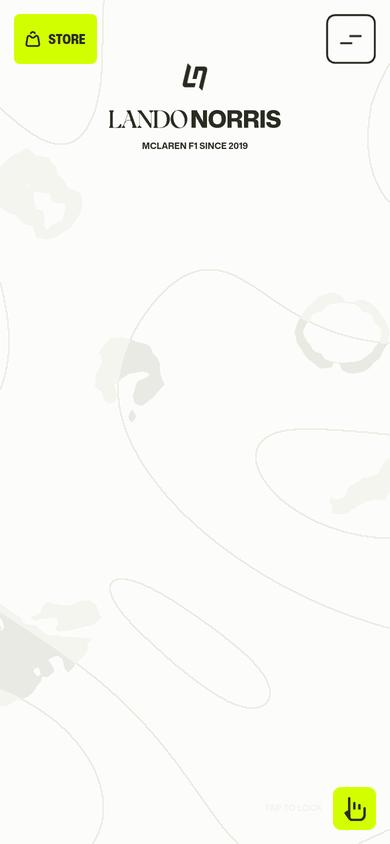
Purpose & industry: Personal brand, fan hub and store for the McLaren Formula 1 driver. Sport and athlete.
What makes it distinctive
- Typography (observed): The wordmark pairs a high-contrast serif "LANDO" with a heavy grotesk "NORRIS". The DOM lists Mona Sans Variable and Brier; I infer Brier is the serif. It reads as part fashion magazine, part race livery.
- Colour (observed): Off-white canvas with grey topographic contour lines, plus a single acid-lime accent used only for the STORE button. One accent, used once.
- Content as interface (observed): A small "NEXT RACE · AUSTIN GP" card with a track outline and a "McLaren F1 since 2019" laurel. It gives the site a live, seasonal reason to revisit.
- Storytelling (observed): Sections run "Message from Lando" → On Track → Off Track → Helmets → Hall of Fame → Store → Partners → Socials. That's a clear narrative arc from person to performance to commerce.
User experience (observed)
- Navigation: Home, On Track, Off Track, Calendar, Store, behind a menu button. The persistent STORE CTA is never more than a glance away.
- Mobile: the wordmark re-centres, CTA buttons become large thumb targets, and a pointer/hand hint appears bottom-right.
- 1
<h1>, 40 headings, all 133 images carryalt,<main>present. Missing: skip link,<nav>landmark, reduced-motion handling. - 21
<canvas>elements on one page, which is a lot of animated layers for low-end phones. I couldn't measure the real-device impact.
Design lessons
- Pair one expressive serif with one sturdy grotesk to give a personal brand both personality and punch.
- Reserve your brightest colour for the action you most want taken.
- Put a time-sensitive "now" module (next race, next event, next drop) in the first viewport.
Credits & awards (source): OFF+BRAND (London). Awwwards SOTD 17 Nov 2025: 8.18 overall, Usability 7.90, Creativity 8.71. Awwwards Site of the Year 2025 and Users' Choice 2025. Awwwards lists Webflow, GSAP and WebGL.
2. Messenger — messenger.abeto.co
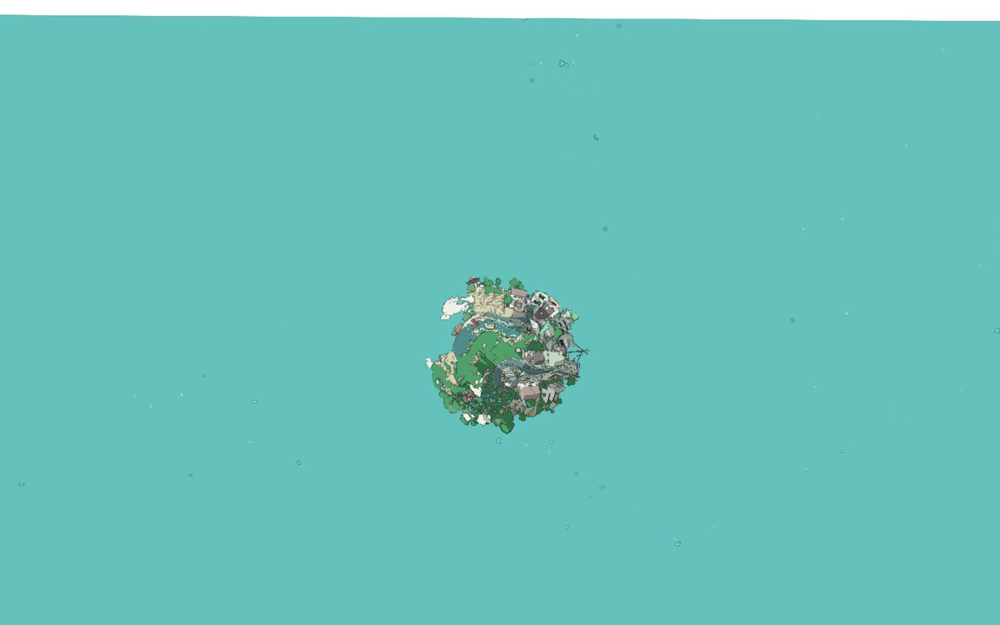
Observed capture: the planet after the intro transition.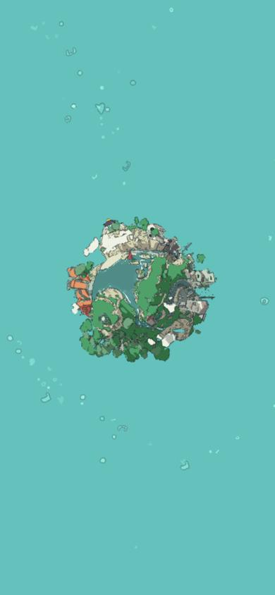
Purpose & industry: A self-initiated browser game and experiment ("It's a small planet, but someone's gotta make the deliveries" — page description). Experimental, entertainment, studio showcase.
What makes it distinctive
- Art direction (observed): A cel-shaded miniature planet of houses, trees and harbours floating in flat teal. It's illustrated, not photoreal, which keeps the scene readable at tiny sizes and is kinder to GPUs.
- Transitions (observed): The intro is a hard diagonal teal wipe, then a pull-in on the planet. It's simple geometry, not a spinner.
- Interaction (source): Awwwards lists WebSockets, so other visitors share the world in real time.
User experience
- Observed: the HTML ships an empty
<body>and a single JS module. No text exists in the DOM (0 characters, 0 headings), so screen readers and search engines get nothing. - Observed: it ran on mobile emulation, with the planet rendering at 390 px.
- Source: Awwwards Usability 7.46 is its lowest sub-score.
Design lessons
- A stylised, low-poly or toon look scales across devices better than photorealism, and reads as more "designed."
- Small worlds beat big ones: a planet you can see whole orients people instantly.
- If you build a canvas-only experience, ship a text layer (title, instructions, about) in HTML alongside it.
Credits & awards (source): abeto (United States, per its Awwwards profile). Awwwards SOTD 10 Nov 2025 (7.92). Developer Site of the Year 2025. Stack per Awwwards: Three.js, WebGL, WebSockets. Released Sep 2025 (from research summary; unverified).
3. Igloo Inc — igloo.inc
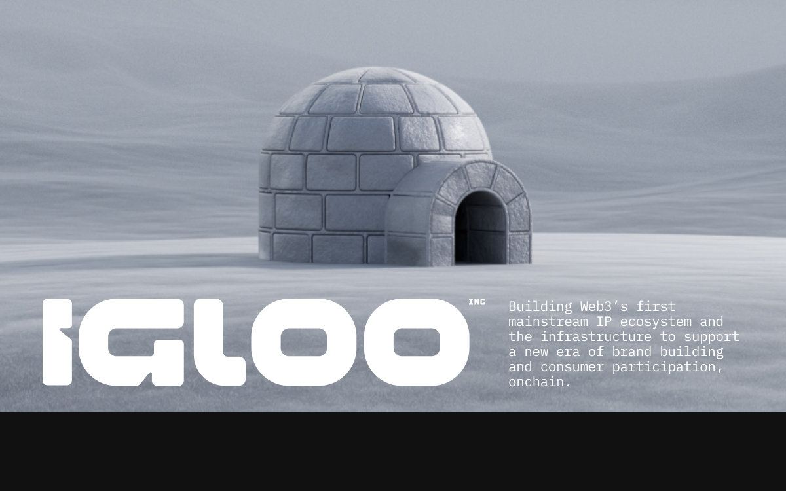
Site-provided image (Open Graph). My capture showed only the loader on grey: a text-glyph progress bar-=+=----==.
Purpose & industry: Corporate site for Igloo Inc., a consumer-crypto company (meta description: "create the largest onchain community"). Its link to the Pudgy Penguins brand is widely reported but not verified here. Web3 and venture.
What makes it distinctive
- Metaphor (observed + source): The whole brand world is ice. A single igloo in a snowfield, with frosted materials and a cold blue-grey palette.
- Typography (observed, via preview): Ultra-rounded geometric display type ("IGLOO") against small monospace body copy, which gives a "terminal" crypto voice.
- Loader (observed): An ASCII-style progress bar. It's on-brand, low-cost, and more characterful than a spinner.
User experience (observed)
- HTML is just a
<title>, meta tags and one script. The<body>is empty: no headings, no links, no text in the DOM even after 35 seconds. - ≥15 MB transferred within the first 35 seconds on desktop. That's significant on mobile data.
- I couldn't assess navigation because the scene never rendered without a GPU.
Design lessons
- One strong physical metaphor (ice, glass, paper) can carry an entire identity.
- Treat the loader as the first scene, not dead time.
- Caution: award-winning ≠ inclusive. Don't copy the empty-HTML architecture; render core copy and links as real HTML.
Credits & awards (source): abeto and Bureaux. Awwwards SOTD 23 Jul 2024 (7.92; Usability 7.50). Site of the Year 2024 and Developer Site of the Year 2024.
4. Lusion — lusion.co
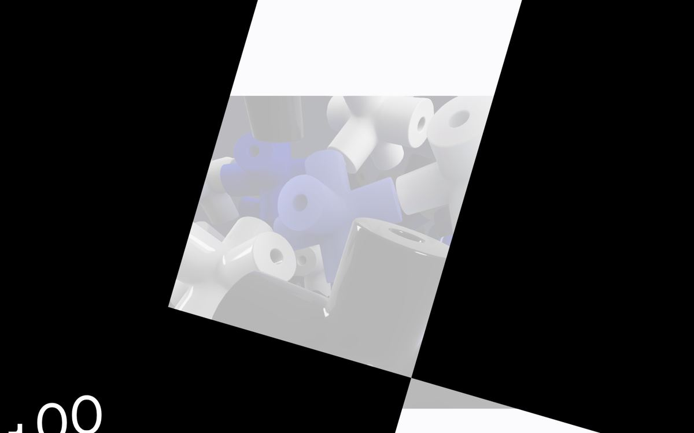
Observed capture, mid-transition: tumbling white and blue 3D objects inside a skewed panel; large numeric loader bottom-left.Purpose & industry: Portfolio for a 3D and interactive web studio in Bristol, UK (footer). Creative services.
What makes it distinctive
- 3D as material, not decoration (observed): Glossy, toy-like 3D pieces in white and periwinkle tumble through a slanted window. It's playful physics that says "we build this" without a sentence.
- Loader as typography (observed): A huge counter ("014…") set in Aeonik, cropped at the bottom-left of the viewport.
- Copy (observed): "We create 3D visual storytelling and interactive web experiences that help brands stand out." The rest is short, confident text with 12 featured projects (Oryzo AI, Devin AI, Porsche: Dream Machine…).
User experience (observed)
- Viewport disables pinch-zoom (
maximum-scale=1, user-scalable=no). - No
<nav>or<main>landmarks, and 5 unnamed controls. - On mobile emulation only the loader appeared within the capture window, so mobile behaviour is unverified.
- The page has real HTML text (≈2,800 characters, 1
<h1>), so it isn't canvas-only.
Design lessons
- Show capability, then explain it: a 5-second interactive demo outperforms a paragraph of claims.
- Oversized numerals make a loader feel intentional.
- Keep text in HTML even when the hero is all WebGL.
Credits & awards (source): Lusion. Awwwards SOTD 2 Oct 2023 (8.25 overall; Usability 7.95). Site of the Year 2023 and Developer SOTY 2023. CSSDA Website of the Year 2023 (from a CSSDA page snippet; partially verified). FWA SOTY and Cannes Lions Silver/Bronze 2024: unverified (LinkedIn posts only).
5. Immersive Garden — immersive-g.com
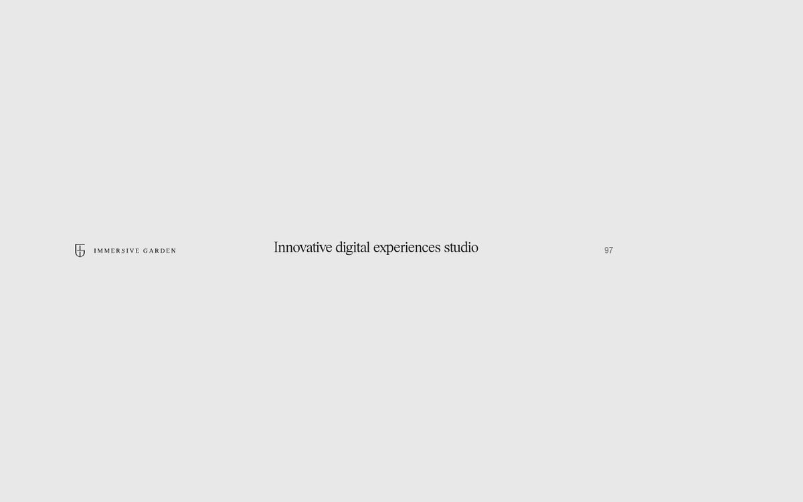
Observed capture: the preloader. Logo, one serif line "Innovative digital experiences studio", and a counter at 97.Purpose & industry: Studio portfolio for a Paris agency known for luxury work (Louis Vuitton, Cartier, Dior, Omega, Longines). Creative services, luxury.
What makes it distinctive
- Restraint (observed): Pale grey ground, PSTimes serif paired with Helvetica Neue, generous empty space. The chrome is quiet so the case-study visuals can be loud.
- Client-led storytelling (observed): The homepage is essentially a list of 18 projects. Each has a one-line story and a category tag (Web Experience / E-Shop / Corporate).
- Sound toggle (observed): An "Off / On" audio control, opt-in rather than autoplay.
User experience (observed)
- Zoom disabled in the viewport tag.
- All 39 images lack
altattributes (19/19 on mobile), with 7 unnamed controls and no<main>. - ≥21 MB transferred within ~35 seconds, the heaviest page in this set.
- The capture stayed on the preloader, so scroll behaviour is unverified.
Design lessons
- Luxury reads as what you leave out: one serif, one sans, one neutral, lots of space.
- A homepage can simply be "the work, with one sentence each."
- Counter-lesson: this is the clearest example here of beautiful-but-heavy. Budget your media.
Credits & awards (source): Immersive Garden, Paris (founded 2014, per its Awwwards profile). Awwwards Agency of the Year 2025 and Studio of the Year 2024. CSSDA Agency of the Year 2024 (research summary). Awards for this specific site version weren't verified.
6. Locomotive — locomotive.ca
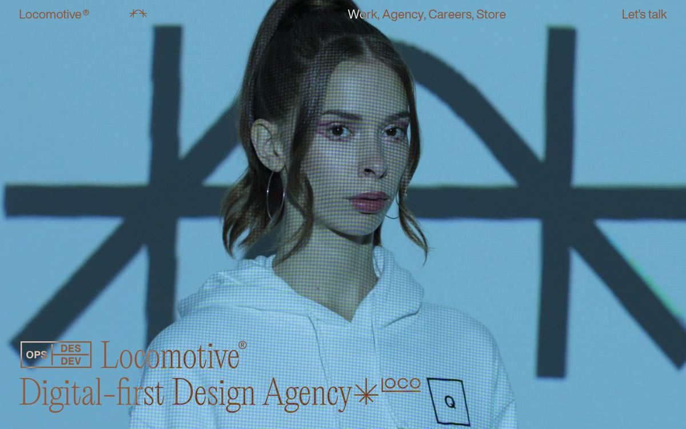
Observed captures (desktop and mobile): full-bleed video with a serif-and-mono headline.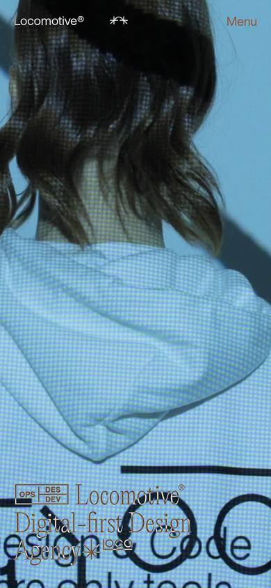
Purpose & industry: Portfolio for a Montréal "digital-first design agency." Creative services.
What makes it distinctive
- Typography (observed): A condensed editorial serif ("Digital-first Design Agency✳") in warm copper over cool blue video. Brand fonts in the DOM: LocomotiveNew and Helvetica Now Display.
- Brand system (observed): A small "OPS | DES | DEV" grid logo-mark and an asterisk motif. The social image repeats "Design & Code are only Tools of Expression" as stuttering, cascading type.
- Projected-light video (observed): Logos are projected onto people, a tactile, physical take on a digital brand.
User experience (observed)
- Navigation is a single line: "Work, Agency, Careers, Store" plus "Let's talk." Very short.
- Reduced-motion CSS is present, as are
<main>and three<nav>landmarks. - Mobile concern: the copper headline sits over busy video with large type behind it, and legibility drops noticeably at 390 px.
- WebFetch was blocked (HTTP 403), so I relied on rendered captures.
Design lessons
- A warm accent over a cool image is an instant, ownable contrast.
- Write navigation as a sentence ("Work, Agency, Careers, Store").
- Check text-over-video at mobile widths; add a scrim or move text off the video when it gets busy.
Credits & awards (source): Locomotive, Montréal. Awwwards Agency of the Year 2024 (and 2023, per research summary). Its profile lists 92 SOTDs. Awards for this specific site build weren't verified.
7. Scout Motors — scoutmotors.com
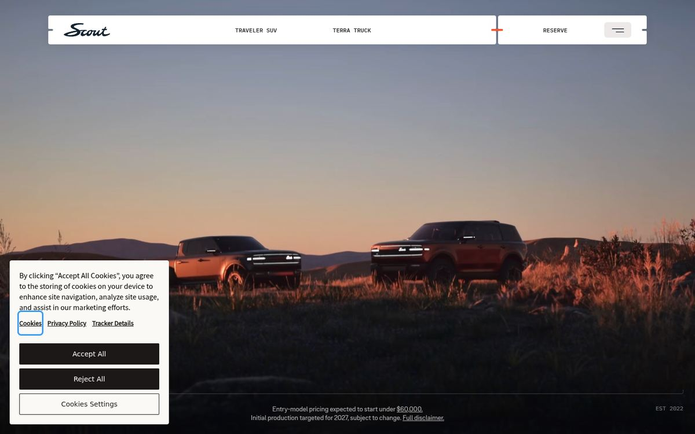
Observed captures: desktop and mobile.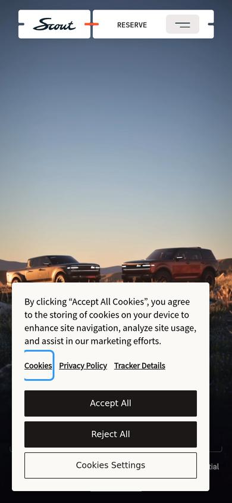
Purpose & industry: Launch and reservation site for the revived Scout SUV and truck brand (Volkswagen Group). Automotive and e-commerce.
What makes it distinctive
- Cinematic heritage (observed): A full-bleed dusk video of the Traveler and Terra on grassland. The hero runs about two viewports before the first headline, "Scouts always come back."
- Navigation as an object (observed): A floating, segmented white nav bar with a small red "+" joint. It's industrial, like a dashboard trim piece.
- Story structure (observed): Present (reserve) → past (1961 International Harvester) → "An icon from day one" numbered 01–12 → reveal event → the duo → manufacturing (Detroit, South Carolina).
User experience (observed)
- Honest disclosures sit right under the hero: "Entry-model pricing expected to start under $60,000. Initial production targeted for 2027, subject to change."
- The cookie dialog gives equal-weight "Accept All" and "Reject All" buttons, which is good practice. But on mobile the dialog covers most of the hero.
- Built with Astro (asset paths). Reduced-motion CSS present;
<main>and two<nav>landmarks. - 17 unnamed controls (icon buttons without accessible names).
Design lessons
- Heritage brands can tell past and future in one scroll: lead with the new product, then earn it with history.
- Put legal and pricing caveats where the claim is made, not in a footer.
- Equal-weight consent buttons build trust, but size the banner so it doesn't bury your hero on mobile.
Credits & awards (source): Locomotive with Scout's in-house team. Awwwards SOTD 16 Jan 2025 (7.60; Usability 7.27). E-commerce Site of the Year 2025. Webby Honoree and Idéa 2025 Silver were in the research summary; I didn't recheck them.
8. Bruno Simon — bruno-simon.com
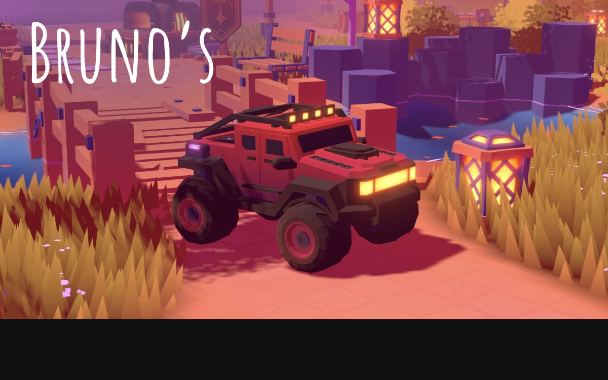
Site-provided image. My capture showed the loading ring on a purple grid floor; the world didn't finish loading under software WebGL.Purpose & industry: The portfolio of a French creative developer and Three.js teacher, built as a drivable game world. Developer portfolio and education.
What makes it distinctive
- The portfolio is a game (source + observed text): Drive a red off-roader through a dusk landscape. Projects, achievements, a time-trial circuit and visitor "whispers" (30-character messages) are places in the world.
- Influence: The 2019 version went viral and became a reference point for "playful portfolios." The late-2025 rebuild keeps the concept and moves to WebGPU with a WebGL fallback (Three.js TSL).
- Generosity (observed): The page credits its stack and links the MIT-licensed source code, Blender files and CC0 music.
User experience (observed)
- Excellent controls documentation for keyboard, touch and gamepad, plus "I'm stuck!" respawn, a quality toggle and a renderer switch.
- When the score server was offline, the UI said so plainly: "Server currently offline. Scores can't be saved." That's graceful degradation.
- No
<h1>, 41 of 44 images withoutalt, 14 unnamed controls, ≥7 MB transferred. No non-3D content path.
Design lessons
- Give users an escape hatch ("I'm stuck!") in any non-standard interface.
- Document every input method, including touch and gamepad.
- Open-sourcing your build is a design decision: it turns a portfolio into a teaching tool.
Credits & awards (source): Bruno Simon, Paris. 2019 version: Awwwards SOTD 11 Nov 2019 (8.04) and Site of the Month Nov 2019; CSSDA Website of the Year (research summary). 2025 version: Awwwards SOTD 21 Jan 2026 (8.11; Usability 7.83), Portfolio Honors Dec 2025, Site of the Month Jan 2026.
9. basement.studio — basement.studio
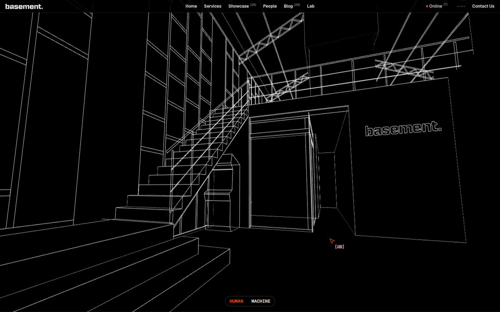
Observed captures: desktop and mobile.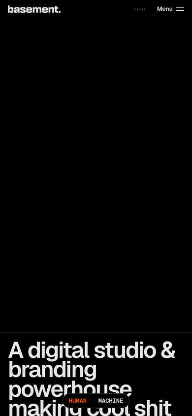
Purpose & industry: Studio site for an Argentina-based design and engineering studio working mainly with Bay Area tech companies (Vercel, Linear, Cursor, MrBeast). Creative services.
What makes it distinctive
- Wireframe 3D (observed): The hero is a white-line wireframe of the studio's own space (stairs, mezzanine, sign). It's 3D, but drawn like an architectural sketch, so it stays monochrome and on-brand.
- HUMAN / MACHINE toggle (observed): A pill at the bottom of the viewport. "Machine" links to
/ai/home, which theirllms.txtdescribes as a "plain-HTML mirror of the site for agents; every content page has a twin at /ai/{path}." - Live details (observed): "● Online (7)" presence indicator; superscript counts in the nav (Showcase 26, Blog 29). Typeface is Geist, which the studio co-created with Vercel (per its own site).
User experience (observed)
<main>and<nav>present; reduced-motion CSS present.- ≥16 MB transferred during the capture window, which is heavy.
- Mobile bug: the HUMAN/MACHINE pill overlaps the large headline text at 390 px.
Design lessons
- Ship a plain-HTML twin of an immersive site. It serves AI agents, but the same idea serves low-power devices, screen-reader users and slow connections.
- Line-art 3D is a cheaper, more distinctive alternative to photoreal rendering.
- Small live numbers (online count, post counts) make a static site feel inhabited.
Credits & awards (source): basement.studio, Mar del Plata, Argentina. Current site: Awwwards SOTD 25 Apr 2025 (7.42; Usability 7.13) plus Developer Award (research summary). Earlier versions: SOTD Jun 2022 and HM Jan 2020.
10. Garden Eight — garden-eight.com
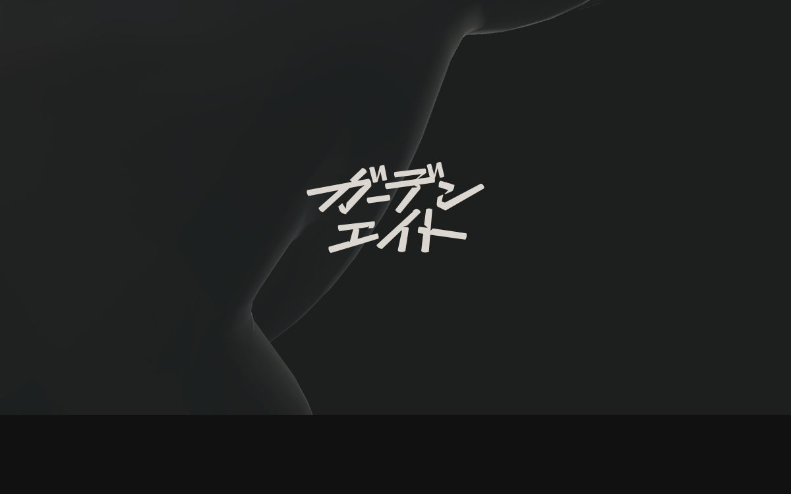
Site-provided image: the katakana logotype ガーデンエイト over a soft 3D form. My capture rendered only a grey field.Purpose & industry: Studio site for a Tokyo digital design studio. Creative services.
What makes it distinctive
- Bilingual identity (observed): English site with a JA switch. The logotype is hand-set katakana, a strong local signature in a global genre.
- Humble voice (observed): "Our goal has always been to make a great website in a playful, yet humble way." The page holds only ~460 characters of text, so the copy is sparse and personal.
- Small UX touch (observed): The email address has "Copy to clipboard / Copied" feedback.
User experience (observed)
- Zoom disabled.
<main>,<nav>and one<h1>present. - I couldn't assess the visual experience: the WebGL scene didn't render.
- Unverified: whether the live site is the same version that won the 2022 SOTD.
Design lessons
- Let your local script be your logo; it differentiates instantly.
- Click-to-copy beats
mailto:for many users. Confirm it with a visible state change.
Credits & awards (source): Garden Eight, Tokyo. Awwwards SOTD 10 Mar 2022 (7.46; Usability 7.01, the lowest usability score in this set) and SOTD 8 Aug 2017.
Editorial, brand & storytelling
11. Tengile MalaMala Collection — tengilemalamala.com
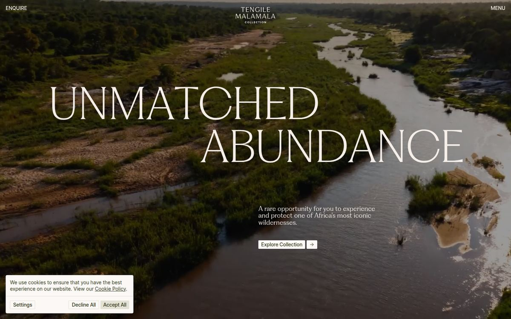
Observed captures: desktop and mobile.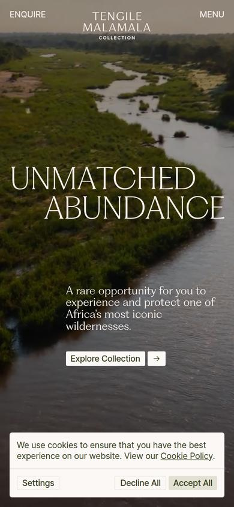
Purpose & industry: Safari lodges and camps on the Sand River, Greater Kruger / Sabi Sand, South Africa, with a conservation and community-ownership story. Hospitality, travel, conservation.
What makes it distinctive
- Photography-led (observed): A full-bleed aerial film of the river. The thin, wide-tracked serif headline "UNMATCHED ABUNDANCE" (PP Fragment, with Inter for body) is staggered across two lines like a title card.
- Restrained UI (observed): Only "ENQUIRE" (left), the logotype (centre) and "MENU" (right), with small paired buttons ("Explore Collection →").
- Story with substance (observed): The page traces the land's protection back to 1927 and explains the Shangaan principle Ntumbuluko ("deep harmony with the land"). It states community co-ownership and describes itself as "one of South Africa's few black-empowered eco-tourism enterprises."
User experience (observed)
- The most accessible awarded site in this set: skip link,
<main>, four<nav>landmarks, 21 headings, andalton every image. - Mobile: the headline re-flows cleanly at 390 px.
- Equal-weight "Decline All / Accept All" cookie choice.
- No reduced-motion CSS detected despite the hero video.
Design lessons
- A luxury feel doesn't require heavy WebGL: great footage, one fine serif and silence do the work.
- Pair aspirational imagery with concrete facts (dates, room counts, ownership) to earn trust.
- Award-level craft and solid accessibility basics can coexist; this site proves it.
Credits & awards (source): DashDigital (Cape Town, South Africa) with Ingamana. Awwwards SOTD 3 Oct 2026 (7.22; Usability 7.26). Stack per Awwwards: React, Sanity, AWS.
12. Colonia Zacamil — coloniazacamil.com
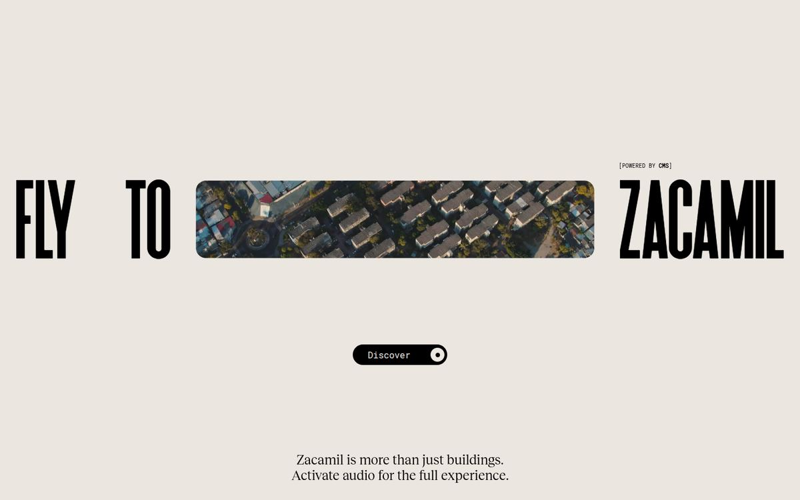
Observed captures: desktop and mobile.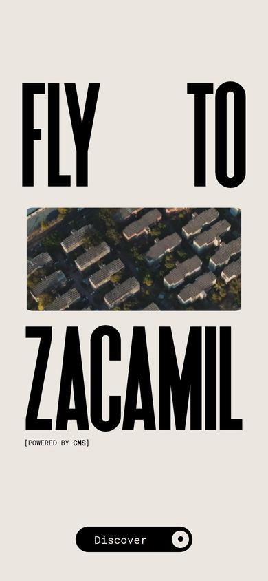
Purpose & industry: An interactive map of a public-art and regenerative placemaking project in Colonia Zacamil, Mejicanos, El Salvador (location per CMS Foundation and secondary sources). Curated by the Custom Made Stories Foundation ("[powered by CMS]" on page). Civic, cultural, non-profit.
What makes it distinctive
- Typographic hero (observed): "FLY TO ZACAMIL" in ultra-condensed black capitals, with an aerial strip of the housing blocks set inside the line of type, like a word. Roboto Mono labels add a field-notes tone.
- Map as table of contents (observed): About 26 named mural and story locations ("Paz y Pachamama", "Cadejo", "Volcano", "The Bus"…) become pins on a 3D model of the neighbourhood.
- Before/after switch (unverified): A "past / present" toggle that strips murals off the buildings, described by a design-news article. I didn't confirm it myself.
- Bilingual (observed): EN/ES switch, with Spanish titles kept in the English version.
User experience (observed)
- Clear gesture instructions for every input: "swipe to explore / click and drag / pinch to zoom / scroll to zoom / click on the pins."
- An audio prompt ("Activate audio for the full experience") rather than autoplay.
- Zoom disabled; no headings or landmarks; ≥5.7 MB transferred.
- Mobile: the hero type re-stacks into three bold lines and works well.
Design lessons
- Put an image inside a headline line to merge word and place.
- For spatial stories, a map is the navigation.
- Write gesture hints for each input type, not just "drag."
Credits & awards (source): Adoratorio Studio with 60fps. Awwwards SOTD 1 Oct 2026 (7.58; Usability 7.42); nominated for Business & Services Honors. Stack per Awwwards: Three.js, Vue.js, WebGL. Adoratorio's home country (Italy) is unverified.
13. The Pudding — pudding.cool
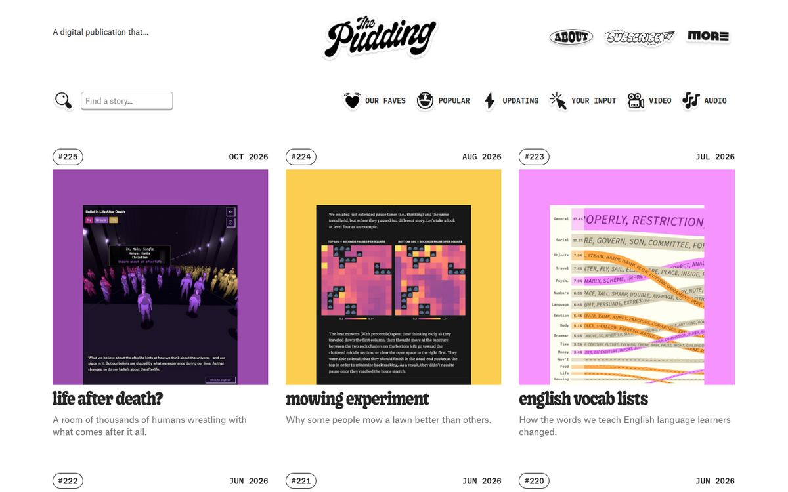
Observed captures: desktop and mobile.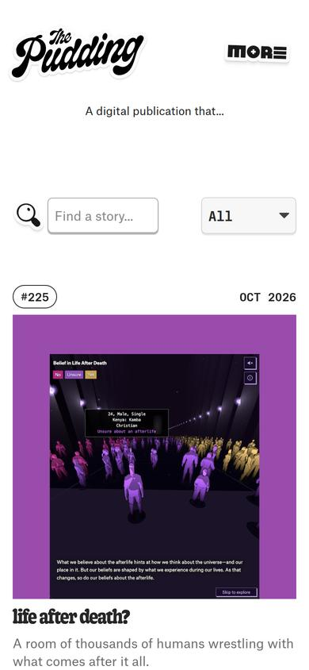
Purpose & industry: A digital publication of visual, data-driven essays ("life after death?", "mowing experiment", "english vocab lists"). Journalism and data visualisation.
What makes it distinctive
- Personality (observed): A retro script logo, sticker-style nav icons (OUR FAVES, POPULAR, UPDATING, YOUR INPUT, VIDEO, AUDIO), and condensed bold headlines (Gooper SemiCondensed).
- Issue numbering (observed): Each story is numbered (#225, Oct 2026) like a magazine. The archive feels collectible and cumulative.
- Card thumbnails are mini-previews (observed): Each tile shows a real frame of the interactive on a saturated colour block.
User experience (observed)
- Search box ("Find a story…") and filters in the first viewport. On mobile they collapse to search plus an "All" dropdown.
- Skip link,
<main>,<nav>, reduced-motion CSS. No<h1>on the index page. - Built with Svelte (HTML references).
Design lessons
- Number your content; it signals output and invites binge-reading.
- Make thumbnails honest previews of the experience, not stock imagery.
- Category filters named by behaviour ("Updating", "Your input") beat topic tags for interactive content.
Credits & awards (source): The Pudding (US; founded by Matt Daniels per research summary). Webby Honoree 2019. Information is Beautiful Awards recognition 2024 (research summary).
14. Bartosz Ciechanowski — ciechanow.ski
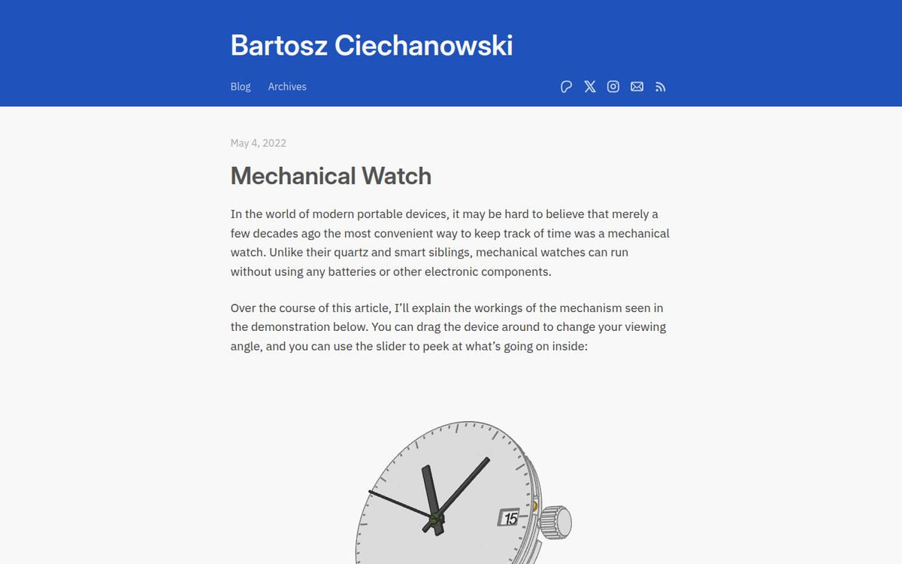
Observed captures (desktop and mobile): "Mechanical Watch" (4 May 2022).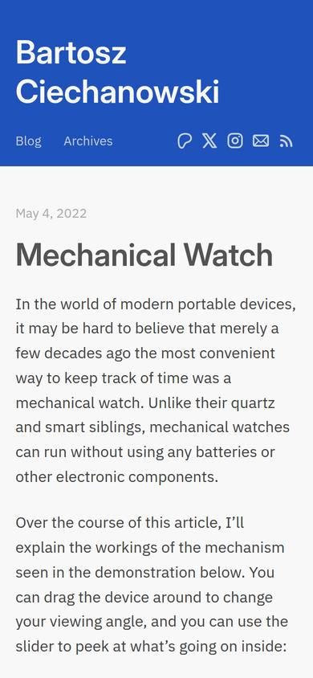
Purpose & industry: Long-form interactive explainers (mechanical watches, GPS, cameras, airfoils) by a solo author. Education and science communication.
What makes it distinctive
- Interactivity in service of understanding (observed): Text and dozens of inline 3D diagrams alternate. Readers drag to rotate, scrub sliders and toggle states. Each figure answers exactly the question the previous paragraph raised.
- Radical plainness (observed): A blue header bar, a ~650 px reading column, Inter, a date and title. No hero, no ads, no pop-ups.
- Scale (observed): ~46,000 characters of text on one page; 14 section
<h1>s.
User experience (observed)
- Superb readability on desktop and mobile; the column becomes full-width with comfortable line length.
- The article tells readers how to use the first figure ("You can drag the device around… use the slider to peek inside").
- 13 images without
alt, no landmarks, 13 unnamed controls, and no reduced-motion CSS (the author offers a global pause instead, per page text).
Design lessons
- Interactivity is best when it's explanatory: one concept per figure, placed right after the sentence that needs it.
- A boring frame lets extraordinary content shine.
- Teach the interaction once, early, in plain words.
Credits & awards (source): Bartosz Ciechanowski (Polish, per secondary source). No awards verified; its influence is widely cited informally.
15. Ableton Learning Synths — learningsynths.ableton.com
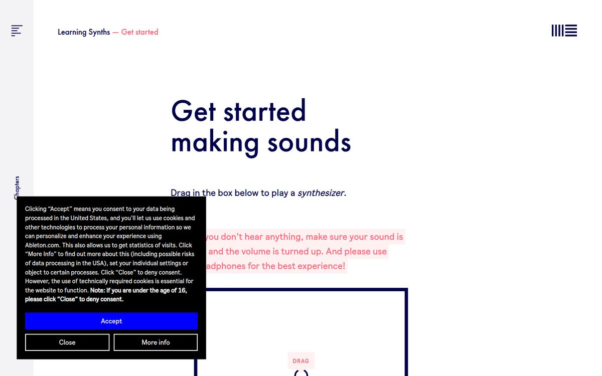
Observed captures, desktop and mobile (cookie banner visible).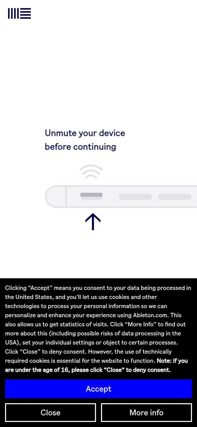
Purpose & industry: A free, interactive course on how synthesizers work, from the Berlin music-software company. Education and music technology.
What makes it distinctive
- Learn by doing in the first viewport (observed): "Get started making sounds. Drag in the box below to play a synthesizer." The very first interaction is the lesson.
- Visual language (observed + site image): Big geometric sans (Ableton Sans), navy text on white, coral highlights, and a set of colourful waveform shapes (triangle, saw, square, sine) as illustration.
- Mobile empathy (observed): On iPhone emulation it shows "Unmute your device before continuing" with a drawing of the phone's mute switch. A real-world failure mode, designed for.
User experience (observed)
- A "Chapters" side rail on desktop; a hamburger on mobile.
- Zoom disabled.
- WebFetch (no JS) got only "Your browser does not support this site," so there's no non-JS fallback.
Design lessons
- Make the first interaction the core value. No intro, no marketing.
- Anticipate the physical context (mute switch, headphones, volume) and design a friendly preflight screen.
- Use simple geometric illustration that literally depicts the concept (waveforms).
Credits & awards (source): Ableton, Berlin. Sibling site Learning Music: Awwwards Honorable Mention 29 May 2017. Learning Synths launched 2019, team led by Dennis DeSantis, sound engine built with Cycling '74 RNBO (research summary; unverified).
16. Teenage Engineering — teenage.engineering
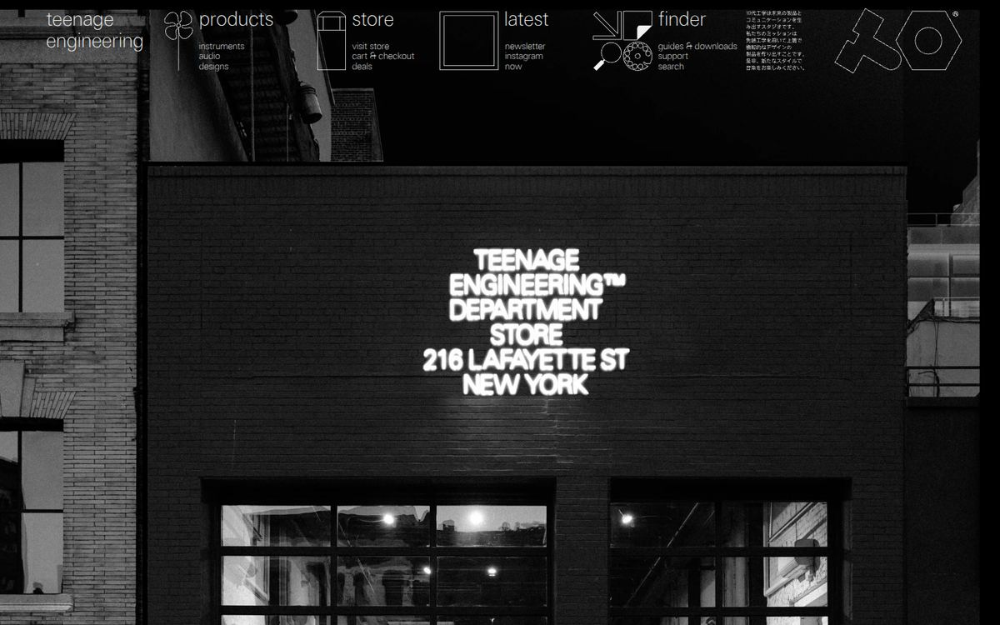
Observed captures: desktop and mobile.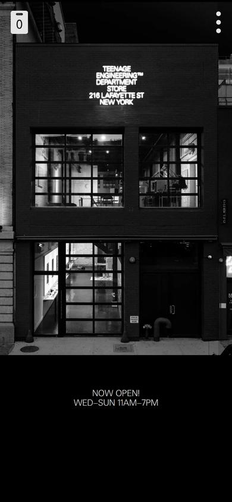
Purpose & industry: Brand and store for the Stockholm maker of synthesizers and design objects (OP-1, Pocket Operators). Consumer electronics and retail.
What makes it distinctive
- Monochrome industrial (observed): Black-and-white night photograph of the new New York store, with a neon sign reading "TEENAGE ENGINEERING™ DEPARTMENT STORE 216 LAFAYETTE ST NEW YORK."
- Navigation as product labelling (observed): A strip of thin line pictograms, each with a lowercase word and small sub-links (products: instruments · audio · designs; store; latest; finder). Alongside sits a dense block of tiny Japanese text, like the spec plate on one of their devices.
- Custom type (observed): The DOM uses the in-house font te-20; the copy is all lowercase.
User experience (observed)
- Very light page. Reduced-motion CSS present.
- Zoom disabled; no
<h1>. - Mobile reduces to a cart counter, a kebab menu, the photo and "NOW OPEN! WED–SUN 11AM–7PM." It's clear, if spare.
Design lessons
- Let your website look like your product (labels, pictograms, spec plates).
- One monochrome photograph plus precise micro-typography can out-brand any animation.
- Sub-links under top-level nav items reduce clicks without mega-menus.
Credits & awards (source): Teenage Engineering (Stockholm, from the site footer). Site designer and awards unverified.
Product & utility
17. Linear — linear.app
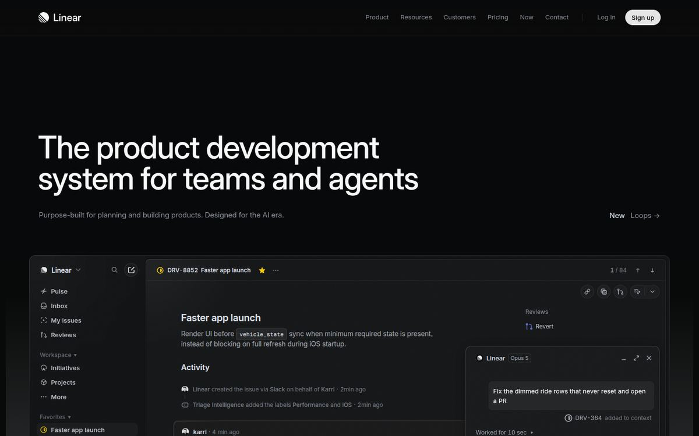
Observed captures: desktop and mobile.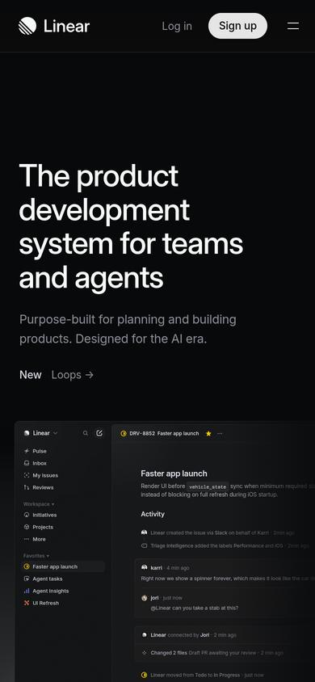
Purpose & industry: Marketing site for a product-development and issue-tracking tool, now positioned "for teams and agents." B2B SaaS.
What makes it distinctive
- The product is the hero (observed): Under "The product development system for teams and agents" sits a pixel-accurate rendering of the actual app: sidebar, issue, activity feed and an AI agent panel.
- Precision dark aesthetic (observed): Near-black background, grey secondary text, a white pill CTA. Inter Variable for UI and Berkeley Mono for technical labels, plus "FIG 0.1"-style captions under isometric line drawings, like a technical manual.
- Two-tone headlines (observed): A white statement followed by a grey continuation ("A new species of product tool. Purpose-built for…"). It's a common SaaS pattern now; Linear's execution is very tight.
User experience (observed)
- Skip link,
<main>, two<nav>landmarks, reduced-motion CSS. About 9,000 characters of real content. - Excellent mobile layout: the headline scales and the product UI crops gracefully.
Design lessons
- Show your actual interface, at real fidelity, above the fold.
- Use a monospace "spec" voice for captions and labels to signal engineering rigour.
- Two-tone headline/sub-head pairs let one sentence do the work of two.
Credits & awards (source): Linear (in-house). No awards verified. Linear has published design write-ups on its 2024 UI redesign (research summary).
18. Stripe — stripe.com
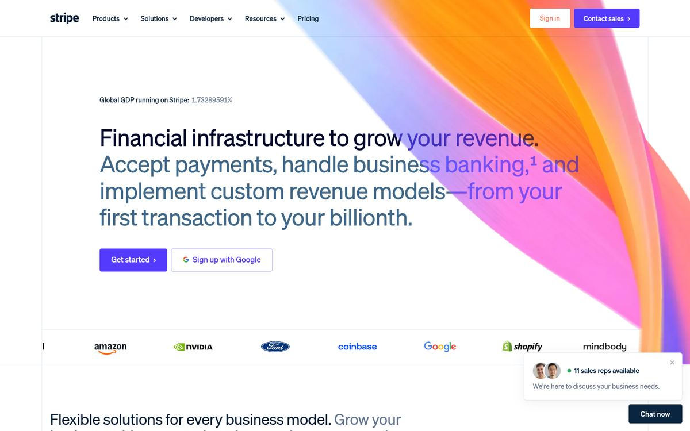
Observed captures: desktop and mobile.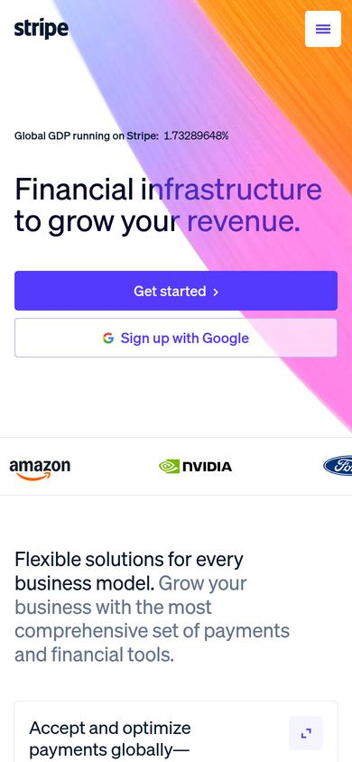
Purpose & industry: Homepage for the payments and financial infrastructure company. Fintech, B2B.
What makes it distinctive
- The gradient ribbon (observed): A flowing orange-pink-violet band sweeps across the hero. It's the most-imitated SaaS visual of the last decade, and still distinctive here because it's paired with very sober typography (Söhne Variable).
- Live data as headline (observed): "Global GDP running on Stripe: 1.73289591%", a ticking figure that makes an abstract claim concrete.
- Hierarchy (observed): The headline sets its first clause in dark ink and the continuation in slate blue. Primary and secondary CTAs ("Get started", "Sign up with Google") are clearly ranked.
User experience (observed)
- Mega-menu navigation (Products, Solutions, Developers, Resources, Pricing). The mobile hamburger keeps both CTAs full-width.
- A sales-chat pop-up ("11 sales reps available") appears over content on desktop.
- Two
<h1>elements; no reduced-motion CSS detected despite the animated hero.
Design lessons
- One signature visual plus disciplined type can define a brand.
- Turn a big claim into a live, specific number.
- Rank your CTAs visually: one filled, one outlined.
Credits & awards (source): Stripe (in-house). Stripe.com is listed as an Awwwards nominee only. The separate Stripe Dot Dev site won Awwwards SOTD 9 Oct 2024 (7.43).
19. GOV.UK — gov.uk
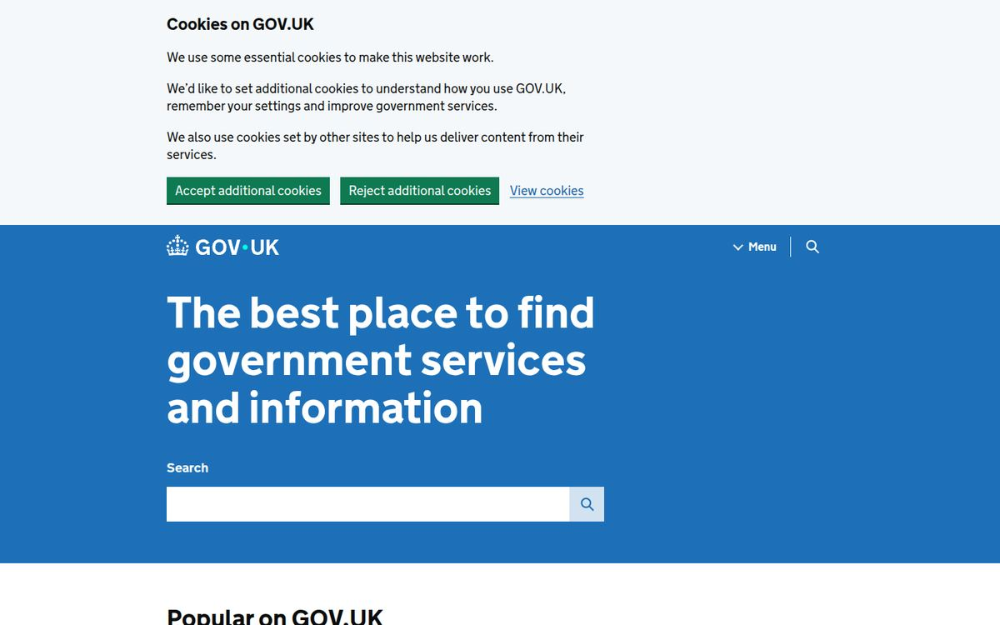
Observed captures, desktop and mobile (cookie banner shown on first visit).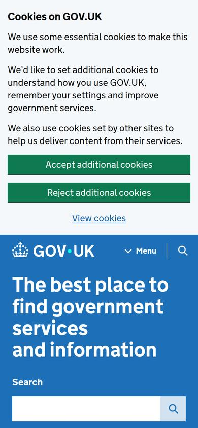
Purpose & industry: The single domain for UK government services and information. Public sector. Included deliberately as the counterweight to visual complexity.
What makes it distinctive
- Utility as identity (observed): One typeface (GDS Transport), one blue, one black, and a giant plain-English headline ("The best place to find government services and information"), with search as the primary action.
- Influence (source): Its design principles and open-source design system (GOV.UK Frontend) have shaped public-sector design worldwide.
User experience (observed)
- The lightest page measured in the set (≥0.2 MB). Skip link, landmarks, reduced-motion CSS.
- Cookie banner with equal "Accept additional cookies" / "Reject additional cookies" buttons, plus "View cookies."
- Mobile is effectively identical in hierarchy, just narrower.
Design lessons
- Write the headline as the user's goal, not your brand promise.
- Search-first is a design style. For content-heavy sites it often beats navigation menus.
- Consistency (one font, one blue, one button style) is a brand.
Credits & awards (source): Government Digital Service. Launched 2012. Design Museum Design of the Year 2013 (overall and digital category).
20. Poolsuite — poolsuite.net
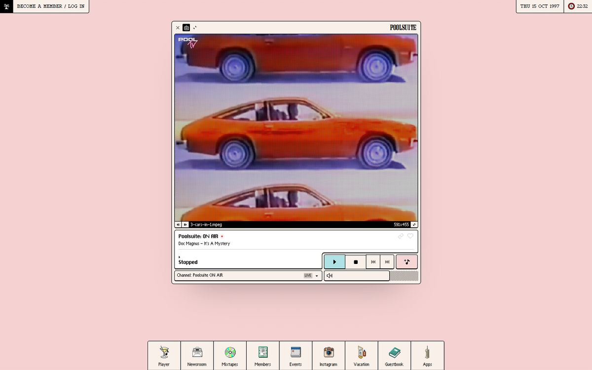
Observed captures: desktop and mobile.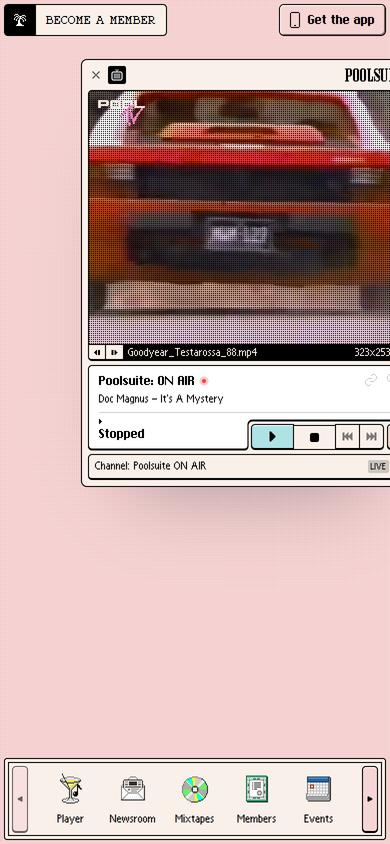
Purpose & industry: A summer-themed internet radio and lifestyle brand (formerly Poolside.FM). Music, media, membership.
What makes it distinctive
- Retro-OS metaphor (observed): A late-'90s Mac-style desktop in pale pink. A windowed player shows grainy "Pool TV" car-commercial footage, a "Poolsuite: ON AIR" channel and transport buttons. A dock holds Player, Newsroom, Mixtapes, Members, Events, Instagram, Vacation, Guestbook, Apps.
- Playful detail (observed): The menu-bar clock reads today's date in 1997 ("THU 15 OCT 1997"). Fonts include a bitmap-style face (Ishmeria).
- Commitment to the bit: Every feature is an "app" in the fake OS, so the metaphor is the information architecture.
User experience (observed)
- On desktop the metaphor is instantly understood.
- Mobile bug: the player window is clipped off the right edge at 390 px (no page-level overflow was flagged, so it's cropped inside a container).
- 73 of 133 images lack
alt, 11 unnamed controls, no<h1>, no reduced-motion CSS.
Design lessons
- A strong nostalgic metaphor can double as your IA (apps = sections).
- Tiny jokes (the 1997 clock) create affection and shareability at zero cost.
- Retro desktop metaphors need a genuine mobile re-think, not just scaling.
Credits & awards (source): Founded by Marty Bell; standalone site since 2019 (research summary). Product Hunt Golden Kitty 2020 for the iPhone app and Launch of the Day 2021. No web-design awards verified; creator's country unverified.
3. Top five selections
Criteria: originality and how well the design serves its purpose, weighted against observed usability and accessibility. Awards were a tiebreaker, not a driver.
| Rank | Site | Why it makes the top five |
|---|---|---|
| 1 | Bartosz Ciechanowski | The purest example of interaction serving understanding. Every figure exists because a sentence needed it, inside a frame so plain it disappears. No award needed: it changes what readers know. Accessibility of the figures is the one gap. |
| 2 | Tengile MalaMala Collection | Shows award-level beauty and the strongest accessibility basics among awarded sites (skip link, landmarks, alt text, equal cookie choice). It proves you don't need 15 MB of WebGL to feel luxurious. Footage, a fine serif and silence do it. |
| 3 | Lando Norris | The year's top award winner, and it earns it on fundamentals: a memorable two-typeface wordmark, a single accent colour reserved for commerce, a live "next race" module, and a clear person → performance → store narrative. Its alt-text coverage is complete. |
| 4 | basement.studio | Combines a distinctive wireframe aesthetic with the single most forward-looking idea in the collection: a HUMAN / MACHINE switch to a plain-HTML twin of every page. It's heavy, and the toggle overlaps text on mobile, but the concept is worth stealing. |
| 5 | Ableton Learning Synths | Makes the first interaction the lesson, and designs for the physical world ("unmute your device"). A model for any product that needs to teach. |
Honourable mentions: Linear (best product-as-hero), Colonia Zacamil (map-as-navigation and type-as-image, for a civic cause), GOV.UK (the benchmark for clarity), and Messenger (the most delightful pure experiment, held back by having no text layer at all).
Why not Igloo, Immersive Garden or Lusion in the top five? They are visually extraordinary and heavily awarded. But in observed terms they ship empty or near-empty HTML (Igloo), lack image alt text (Immersive Garden), disable zoom (Lusion, Immersive Garden), and are among the heaviest pages tested. Visual complexity is not the same as good design.
4. The strongest design ideas across the collection
- Make the first interaction the value. Ableton's playable box, Linear's real UI, Ciechanowski's draggable watch. Nobody waits for a pitch.
- One accent, used once. Lando's lime STORE button, Scout's red "+" joint, Locomotive's copper headline. Scarcity makes colour mean something.
- Two typefaces with opposite personalities. Serif + grotesk (Lando, Locomotive, Immersive Garden), sans + mono (Linear, Zacamil, Igloo). The contrast does the branding.
- Live, specific data as a headline. Stripe's GDP counter, Lando's next race, basement's "Online (7)," Teenage Engineering's store hours.
- A single strong metaphor that doubles as navigation. Poolsuite's desktop (apps = sections), Zacamil's map (pins = stories), Bruno's world (places = projects), Messenger's planet.
- Stylised over photoreal 3D. Toon shading (Messenger), wireframe (basement), toy-like plastic (Lusion). More distinctive, more legible, and usually lighter.
- Loaders as the first scene. Igloo's ASCII bar, Lusion's giant counter, Immersive Garden's serif line with percentage.
- A plain-HTML twin for immersive sites. basement's
/ai/mirror. Generalise it to a text, low-power or accessible mode. - Design for the physical context. Ableton's mute-switch prompt; Bruno's keyboard, touch and gamepad docs, plus "I'm stuck!"
- Honesty builds trust. Scout's pricing and timing caveats next to the claim; equal-weight cookie choices (Scout, Tengile, GOV.UK); Bruno's "server offline" message.
Recurring weaknesses to avoid (observed)
- Disabling pinch-zoom (6 of 20 sites: Lusion, Immersive Garden, Garden Eight, Zacamil, Ableton, Teenage Engineering).
- Missing text alternatives: Igloo and Messenger render no DOM text at all; Immersive Garden, Bruno Simon and Poolsuite leave most images without
alt. - No reduced-motion handling detected on 13 of 20 sites, including most of the motion-heavy ones. (Cross-origin stylesheets can't be inspected, so a few may handle it in ways I couldn't see.)
- Weight: several WebGL sites transferred 5–21 MB within the first ~35 seconds.
- Award juries agree, quietly. For every awarded site with published Awwwards scores, Usability was the lowest or second-lowest sub-score, and in most cases the lowest.
5. Things I could not verify
- Real-device rendering and speed of the heavy WebGL sites (Igloo, Bruno Simon, Garden Eight, Lando's 3D layer, Immersive Garden's case-study scenes). My renderer had no GPU.
- Colonia Zacamil's "past/present" switch (reported by a design-news article; not observed by me).
- Lusion's FWA Site of the Year and Cannes Lions 2024 awards (LinkedIn only). The CSSDA WOTY 2023 is only partially confirmed.
- Scout Motors' Webby and Idéa awards, The Pudding's 2024 Information is Beautiful recognition, and Bruno Simon's 2019 CSSDA WOTY (research summary; not rechecked).
- Countries for Adoratorio (Italy?), Poolsuite's creator, and Ciechanowski (Poland, secondary source).
- Whether Garden Eight's live site is the same version that won SOTD in 2022.
- Teenage Engineering's and Linear's site designers, and any awards for them.
- Opal Tadpole (E-commerce of the Year 2024) is no longer accessible and was excluded.
Sources
Award platforms (primary)
- Awwwards Hall of Fame 2025 — https://www.awwwards.com/annual-awards/hall-of-fame/2025
- Awwwards Hall of Fame 2024 — https://www.awwwards.com/annual-awards/hall-of-fame/2024
- Awwwards Sites of the Year — https://www.awwwards.com/websites/sites_of_the_year/
- Awwwards Sites of the Day — https://www.awwwards.com/websites/sites_of_the_day/
- Lando Norris — https://www.awwwards.com/sites/lando-norris
- Messenger — https://www.awwwards.com/sites/messenger
- Igloo Inc — https://www.awwwards.com/sites/igloo-inc
- Opal Tadpole — https://www.awwwards.com/sites/opal-tadpole
- Lusion v3 — https://www.awwwards.com/sites/lusion-v3
- Scout Motors — https://www.awwwards.com/sites/scout-motors
- Bruno Simon Portfolio (2019) — https://www.awwwards.com/sites/bruno-simon-portfolio
- Bruno's Portfolio (2025) — https://www.awwwards.com/sites/brunos-portfolio
- Bruno's Portfolio case study — https://www.awwwards.com/brunos-portfolio-case-study.html
- Bruno Simon SOTM Nov 2019 — https://www.awwwards.com/bruno-simon-portfolio-wins-site-of-the-month-november.html
- Bruno Simon profile — https://www.awwwards.com/bruno.simon/submissions
- basement studio (2025) — https://www.awwwards.com/sites/basement-studio-3
- basement studio (2022) — https://www.awwwards.com/sites/basement-studio-1
- basement studio profile — https://www.awwwards.com/basementstudio/
- Garden Eight (2022) — https://www.awwwards.com/sites/garden-eight
- Garden Eight (2017) — https://www.awwwards.com/sites/garden-eight-1
- Tengile MalaMala Collection — https://www.awwwards.com/sites/tengile-malamala-collection
- Colonia Zacamil — https://www.awwwards.com/sites/colonia-zacamil
- Learning Music (Ableton) — https://www.awwwards.com/sites/learning-music-ableton
- Stripe Dot Dev — https://www.awwwards.com/sites/stripe-dot-dev
- Agency profiles: https://www.awwwards.com/locomotive/ · https://www.awwwards.com/offbrand/ · https://www.awwwards.com/abeto/ · https://www.awwwards.com/dashdigital/
- CSSDA, Lusion v3 — https://www.cssdesignawards.com/sites/lusion-v3/44591/
- Design Museum, Designs of the Year — https://designmuseum.org/exhibitions/beazley-designs-of-the-year
Creator and project sources
- basement.studio
llms.txt— https://basement.studio/llms.txt (describes the/ai/plain-HTML mirror) - Bruno Simon source code (MIT) — https://github.com/brunosimon/folio-2025
- CMS Foundation projects (Zacamil) — https://cms.foundation/our-projects
- Dokle, "Colonia Zacamil puts a past-present switch on a 3D map" (secondary) — https://dokle.design/awards/colonia-zacamil-past-present-switch-3d-map
Secondary (used only where marked "unverified")
- Lusion's Cannes Lions / FWA claims via LinkedIn posts by Lusion and Edan Kwan (2024)
- Opal Tadpole E-commerce of the Year via LinkedIn posts by Claudio Guglieri and Ingamana (2025)
Firsthand inspection: All 20 live sites (plus op.al), visited 15 Oct 2026 with headless Chrome, curl and text extraction. Screenshots are in images/.